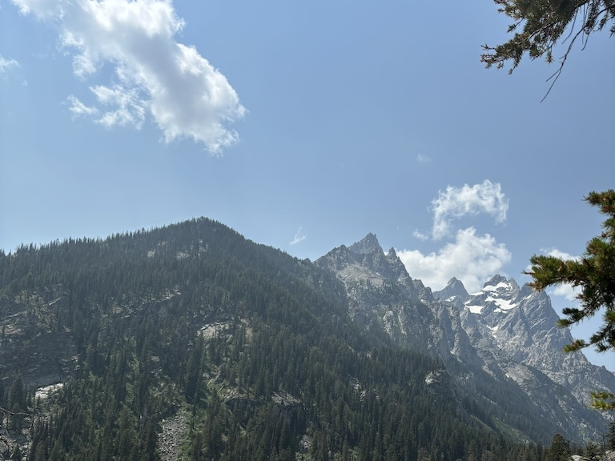

22nd to 25th July 2024
Welcome back to this quiet corner of the internet. I hope you're well wherever you are reading this from. This post will be about my time in Wyoming, specifically the North Western national parks of Yellowstone and Grand Teton. The following few weeks of travel have been booked and planned back in early spring. This is due to the fact I'm very fortunately joined by my lovely girlfriend who has taken the next few weeks off work to come see me out on the road.
After spending a few nights in Salt Lake City (mostly spent picking up a car rental, getting a hair cut and collecting my travel companion from the airport) we arrive in the Hideaway Hostel in Idaho. This place was a fantastic find - hostel rates out in the middle of the Idaho countryside and only 20 minutes or so from the West entrance to Yellowstone national park. Our chalet hosted 3 rooms each holding between 3 and 6 people. The kitchen area was stocked with everything we needed (even some free breakfast items!) and the upstairs landing had this great little dining table by large glazed windows. We ate dinner up here every day.
The next morning we head straight for the park with a plan to do the Fairy Falls trail as early as possible to avoid the heat. A vending machine in West Yellowstone sold rental bear spray at around the half the price of buying a canister outright. Seeing lots of warning signs for animals far bigger than anything native in England we picked up a can.
Yellowstone, in short, is a collection of natural wonders all the result of volcanic activity. In the photo below is the Grand Prismatic Spring. It is fed by a hydrothermal basin of super-heated water from beneath the surface. The points coming off the edge of the lake are small streams, running the excess water into the nearby Firehole River. Living microorganisms in the water (called Thermophiles) are what cause the majestic colours in the lake. And yes, that is a geyser going off behind it. At the beginning of our walk we saw a sign for this viewpoint and took the detour to see it from above.
The shade from the woodland around the trail was very much appreciated.
And we've made it! This is Fairy Falls. It's a fair bit quieter than the rest of the national park as it takes a good hour to walk to. Nonetheless it's definitely worth a visit if you enjoy tall waterfalls. The water free-falls most of the way down producing a satisfying sound and refreshing mist at the base of the falls. We sat and enjoyed this view for a good amount of time before moving on.
We looped back around to the car and headed further South East towards the main attraction in this part of Yellowstone.
Old Faithful is one of the largest and, true to it's name, most consistent geysers in Yellowstone National Park.
A hotel and large visitors center has been built right next to the geyser along with a long U-shaped viewing platform.
At the entrance to the visitors center there is a notice board with the eruption times for all the major geysers.
We arrived around 30 minutes before the next eruption which gave us enough time to watch the visitor center movie (which was surprisingly good).
It's hard to see in the photo below but in the bottom right of each prediction is it's accuracy.
As you can

Being only a few minutes early we got to see the geyser eruption in its full glory. Other than a short 5 second video and this photo I made sure to enjoy the view of this spectacle with my own eyes and not through my camera app. It is staggering how many people record every second of an event like this, likely to never watch the full video back. Nonetheless I did indulge in my urge to capture this moment. At least I can say I've watched the video a good 3 or 4 times since then.

If you ever visit Old Faithful I would recommend walking around the Old Faithful Inn. It claims to be the largest log hotel in the world, first opening for guests in 1904. It's very impressive inside with a huge lobby area and balcony overlooking the dining hall. Bookings were required for a seat in the restaurant so after seeing the upstairs we moved on.
With little time left in the day we drove pack towards the hostel. On the way back we went for a close up view of the Grand Prismatic Lake. The colours running off this body of water are absolutely stunning.
So when we planned to visit Yellowstone we didn't realise Grand Teton national park was bordering it to the south. After discovering this we worked it into our stay, visiting it on our second day in Wyoming. The park follows the Teton mountains with the main road running North to South (the North exit immediately entering into Yellowstone) As you can see below the visibility was a little misty but all in all lovely and sunny.
After circling the car park a few times we managed to find a spot by Jenny Lake. This is one of the most popular hikes in the park and finding parking is difficult (if you can definitely park up early for this one) The route leads around the edge of half the lake to the base of the mountains. Further trails head up the valley to waterfalls and higher viewpoints. The lake was bright blue and beautiful.
Here's part of the trail heading up to "Inspiration point". None of the trail was technically difficult, but parts like this were a little hairy to traverse. The ground was stable but there has clearly been some landslides in the past. Fortunately we weren't crushed by the mountain.
This is the view up the valley from Inspiration point. The snow dusted point is Grand Teton. With more time I'd have loved to go further up the valley to see how far the trail goes.
After looping back to the car and enjoying some lunch we drove further North. At the far end of the park is this view which shows how linear this park is. Essentially the road runs along the Eastern base of the mountains, pulling further away from them as this lake appears. The two tectonic plates meeting to form this range not only produce these high points but also a large valley to this Eastern side, hence the huge body of water stored here. At some point the Americans built the dam, filling the deep valley and creating the expansive Jackson Lake. All very picturesque.

Known for being the best area to spot wildlife we spent our final day driving the Northern roads of Yellowstone. Earlier I mentioned how the natural volcanic springs that produce lakes like the Grand Prismatic lake run off into the nearby rivers. This photo below shows off exactly how this looks in the landscape. It's very common to see rivers that looks like this. On one side is an average looking embankment and on the other a scarred and discoloured slope with sulphur-rich water running all over it.
The most common animal we spotted by far was the Bison. Also known as Buffalo, this huge mammal is quite common in the park. At one point we had to stop the car to let a herd of 50 or more cross the road. You could feel them shaking the road as they ran across, only once up and close can you appreciate how big they really are.

Black bears! We didn't get out of the car to better see it, unsure how safe it was. Despite being the smaller of the two bears you can spot in Yellowstone this Black Bear was surprisingly big! Sadly (or potentially thankfully) we didn't see any Grizzly bears.
The final stop on our last day was to the Grand Canyon of the Yellowstone river. Easily accessible by car and with trails running along both edges I could have easily spent a whole day just here. The view along the canyon was incredible, like nothing I'd seen up to this point on my travels. The power of the river cascading in and the sheer size of the displaced rock can't be properly expressed through a photo. A must do if you ever visit Yellowstone and conveniently near the joining point of the two ring roads.

And with that we spent our last night at the Hideaway hostel and the next day drove on. Yellowstone is a famous national park for good reason. The ecological features are both unique and beautiful. There's easily a week's worth of things to see here. I'd highly recommend making the journey to anyone traveling to the west coast.
Navigate home